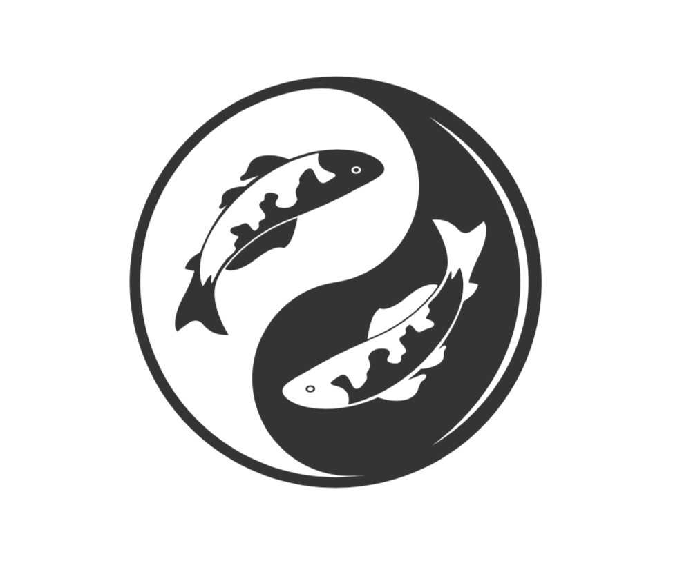

 The content of the blog posts owes much to the inimitable Operating Systems: Three Easy Pieces by the Arpaci-Dusseau duo. Colors for the scheme were generated with Coolors.co. Icons and image used with licenses from Shutterstock. Some html code (example: CSS scrollbar for all/most browsers, card design with shadow) from the invaluable W3 Schools. The name and definition of Saba from this list of words comes from here. Also, this stack overflow question helped with disabling highlighting on webpages. The social links were created with this social links generator.